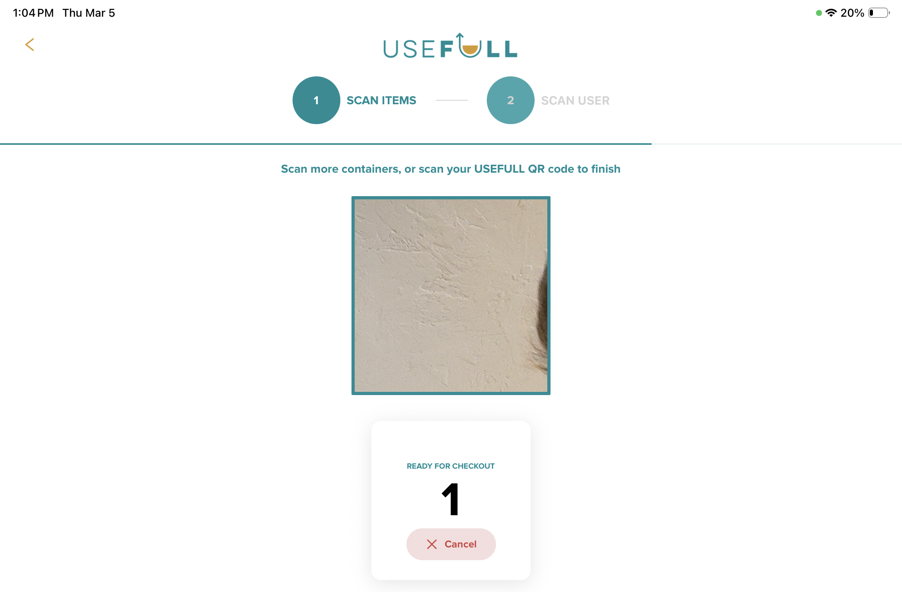
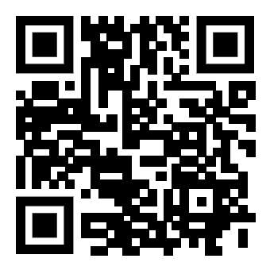
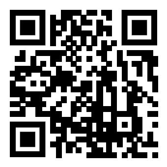
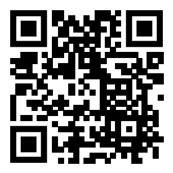

What you're reviewing
We've built two versions of the USEFULL checkout kiosk as Progressive Web Apps (PWAs). Both work identically — you can scan real QR codes using your device's front camera. The difference is layout and visual approach. Your feedback will help us decide which to ship.
What we started with
The original kiosk design had several usability problems for counter-top deployment, where users are standing a full arm's length away from the screen.

Camera view too small
The scan area was a small centered box — hard to line up when the device is flat on a counter and the user is standing above it.
Text too small to read
Instructions, labels, and the container counter were sized for close-up reading — not for a user standing ~2 feet away.
No app download CTA
In the original, new users at the kiosk — without the USEFULL app installed — had no obvious way to get it, or even to know it was needed.
The two new versions below address all three of these, with different layout approaches. The goal is to find which feels most natural in a real checkout context.
The two versions
Full-screen camera
Camera fills the entire screen with a centered scan reticle. Overlaid text and counters. Immersive, minimal chrome.
Split panel
Large camera box on the left, info and counter on the right. White header, clean card UI. More structured layout.
Demo videos
Screen recordings show the full interaction flow. Real-world videos show the kiosk in use on a physical device.
Installing as a PWA
Installing gives you the full kiosk experience — no browser chrome, full screen. Takes about 10 seconds.
iPhone / iPad
- 1 Open either link above in Safari (must be Safari, not Chrome)
- 2 Tap the Share button at the bottom of the screen (box with an arrow pointing up)
- 3 Scroll down and tap "Add to Home Screen"
- 4 Tap Add in the top right. The app icon will appear on your home screen.
Android
- 1 Open either link above in Chrome
- 2 Tap the three-dot menu in the top right corner
- 3 Tap "Add to Home Screen" or "Install App"
- 4 Tap Install. The app icon will appear on your home screen.
Camera permission will be requested the first time you open the app. Tap Allow.
How to use
Once open, the kiosk is listening for QR codes immediately. Hold a QR code in front of the camera — it works with images on screen too.
Scan container QR codes
Hold any valid USEFULL container QR code up to the camera — the sample codes below are just provided for convenience. Each successful scan adds a container to the count. You can scan multiple different containers in one session.
Scan a user QR code to check out
After scanning at least one container, hold any valid USEFULL user QR code up to the camera. This completes the checkout and shows the success screen.
Session resets automatically
The app resets after checkout, or times out after 30 seconds of inactivity. You can also tap Cancel at the bottom of the screen.
Test QR codes
Save these to your camera roll, or open this page on one device and scan from another. You can scan all three cup codes in a single session before checking out.

Cup #21788
Container

Cup #21789
Container

Cup #91282
Container
User #24638
Scan last to check out
A few notes
- — This is a prototype. Scanning works, but no data is saved or sent anywhere.
- — Best tested on a tablet in landscape mode, as it would be deployed on the kiosk arm.
- — Portrait mode is supported but secondary — primarily for testing on phones.
- — Each cup code can only be scanned once per session (by design). To scan again, cancel and restart.